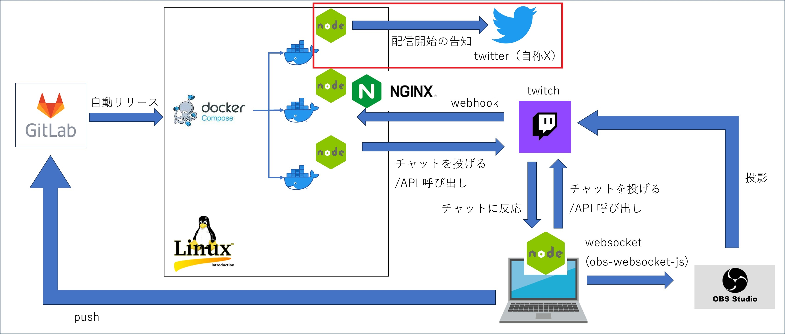

Node.js × Twitter
はじめに
このページは、 Node.js × Twitch, Twitter, OBS の続きです。
Node.js から X（旧twitter）にポストする部分について記載します。以下画像の赤枠部分です。

その他の部分については、以下リンク先に別ページでまとめています。GitLab や Linux, Docker, nginx については記載していません。
Node.js × X（旧twitter）
Node.js から X（旧twitter）にポストするためには Xの API を呼び出す必要があります。X（旧twitter）のAPIは、限定された条件内であれば無料で使用することができます。具体的な条件は以下。
- 月1,500、1日50ポストまで
- ポストとポストの削除
- 自分のアカウントのデータの取得（フォロワー数、フォロー数など）
詳しくはリンク先参照。
XのAPIはv1.1, v2の2つがあり、それぞれ以下のように使い分ける必要があります。
- v1.1：ツイートに画像や動画などのメディアを添付する場合に使用。
- v2：上記以外は基本的にはv2を使用。
私はX関連の機能を Node.js で実装する場合、 node-twitter-api-v2 というライブラリを使用しています。これを使うと簡単にv1.1とv2を簡単に切り替えることができるので便利です。実際にそのライブラリを使用したコードは以下の通り。
事前に以下コマンドで node-twitter-api-v2 をインストールしている前提です。
npm i twitter-api-v2
tweet.jsexport async function tweetStreamStart() {
let tweetClient = new twitter.TwitterApi({
appKey: [api_key],
appSecret: [api_secret],
accessToken: [access_token],
accessSecret: [access_secret],
}).readWrite
// 画像のアップロード。
// 複数ファイルをアップロードする場合は Promise.all([]) 内で複数アップロード。
const mediaIds = await Promise.all([
tweetClient.v1.uploadMedia([file_path]), // v1.1で画像アップロード
]);
const status = {
text: [post_text],
media: {media_ids: mediaIds} // Pass the media id string
}
tweetClient.v2.tweet(status) // v2でポスト
}
"[ ]"には以下の値を設定します。
- api_key：XのAPI Key
- api_secret：XのAPI Secret
- access_token：XのAccess Token
- access_secret：XのAccess Secret
- file_path：ポストするファイルのパスとファイル名
- post_text：ポストする文言
XのAPI を使うためには 各種APIキーを取得する必要があります（上記1～4）。
これらを取得する方法はこちら参照。
これは余談ですが、（おそらくですが）2023年4月頃にXのAPI仕様が変わって以降、APIキーを取得するプロセスが変わって、以前よりは案外楽に取得できるようになったようです。
無料枠で済むようなものであれば気軽に申請できるようなので興味ある方はやってみてはいかがでしょうか。
話を戻します。
Twitch の Webhook を使うと配信開始のイベントを受け取ることもできるので、組み合わせることで、配信開始と同時にXに自動的にポストするということも実現できます。
以下が実際のポストです。
twitch配信通知bot
— sagamax@サガとレトロゲー (@sagamax__) September 30, 2023
twitchでロマサガ3配信中です！
お時間合う方是非遊びに来てみてくださーい。
▶️視聴はこちら：https://t.co/P46Z6JrYH1#ロマサガ3 #レトロゲーム #レトロコンシューマー愛好会 pic.twitter.com/UeLX1jIXB8
その他の実装
Node.js と X の組み合わせについては以上です。その他の組み合わせについては以下リンク先を参照してください。
参考サイト